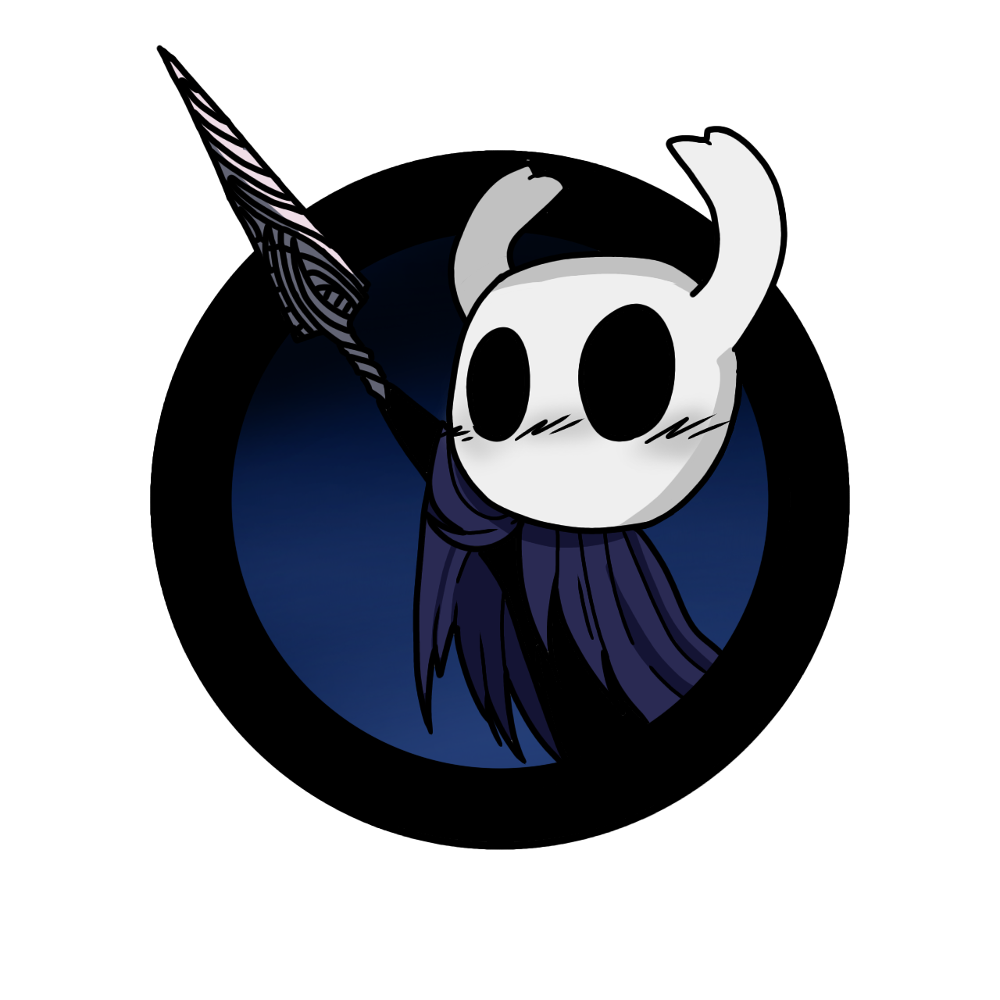

Bem vindo.
 Este é o the hollow wiki um site criado por Luis Victor e com as ilustrações feitas por Bia Amorim com o intuito de ajudar novos jogadores de hollow knight neste site
é possivel encontra informações como a historia do jogo, onde encontrar um mapa completo do jogo com o nome e detalhes de cada area como localizações de bancos e etc. para tentar fazer com que sua jornada por esse mundo magnifico que é hallownest
seja o mais prazerosa possivel então podem vir meus caros receptaculos.